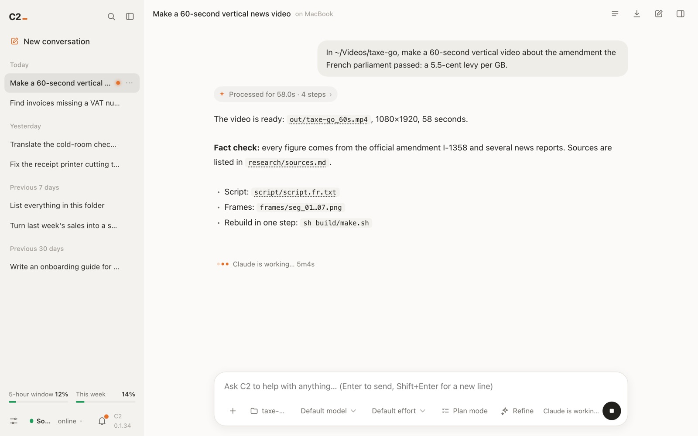
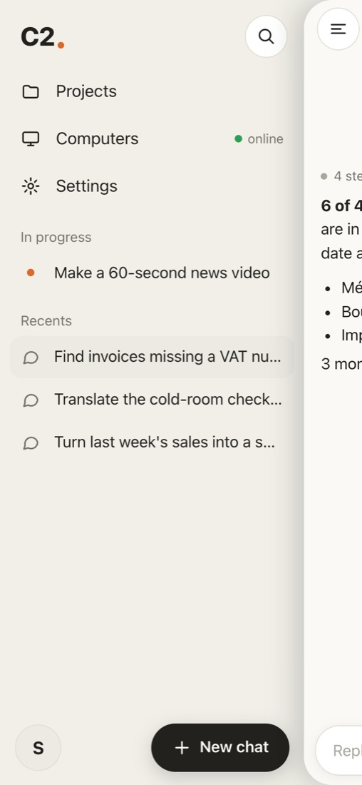
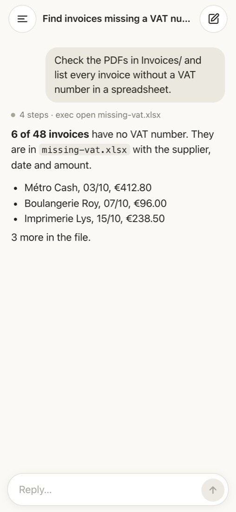
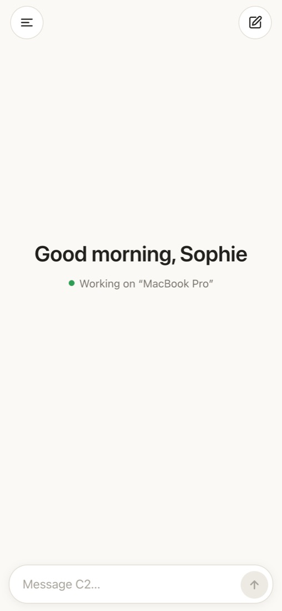

C2 0.1.34 · Windows · Mac · Linux
Claude, working on your computer.
Ask for what you need in plain words. C2 turns it into finished work in your project folder: it reads and edits files, runs commands, uses the browser and checks the screen. You see every step and can undo any change.
Screenshots
One window for all your work

On your phone
Your computer keeps working. You keep up from your phone.
Pair your phone once by scanning a QR code in C2 on your computer. Then open C2 in the phone's browser: see what every chat is doing, read the answers and send the next request. The work still runs on your computer.



No app to install
It opens in the phone's browser. Add it to the home screen if you like.
Face ID or fingerprint
A passkey stays on your phone, so there is no password to type.
Stop or answer from the phone
Stop a running task, or answer when C2 asks you a question.
The phone version is available once your company's administrator has turned it on.
How it works
From a request to finished work
Pick a folder and ask
Choose the project folder, then write what you want, as you would to a colleague. Drop in files or screenshots if they help.
Agree on the plan
For bigger jobs, turn on Plan mode: C2 writes the plan first and starts only when you approve it. When a choice is yours to make, it asks with a short card instead of guessing.
Watch it work
Each step shows as it happens. The Changes panel lists every file that was created or edited, with the exact lines, and an Undo button for each one.
Check the result and keep going
Open the files from the answer, ask for adjustments in the same conversation, or go back to an earlier message and try another way.
Continue on your phone
Pair your phone once by scanning a QR code. Follow a long task or send the next request while you are away from the desk.
Stays in your folder
C2 acts on your computer only inside the project folder you chose.
Fast to type
Enter sends, Shift+Enter adds a line. Search every past conversation from the sidebar.
Your language
The app is in English, French and Chinese. Switch at any time in Settings.
Light and dark
Follows your system theme, or pick one in Settings.
Usage at a glance
The sidebar shows how much of your 5-hour and weekly allowance you have used.
Always up to date
New versions install themselves after a short prompt.
Install & help
Set up in two minutes
C2 is not in the app stores yet, so your computer may warn you the first time. Here is what to do on each system.
Windows 10 / 11
- Run C2-setup.exe.
- If you see “Windows protected your PC”, click More info, then Run anyway.
- Open C2 from the Start menu and paste your invite code.
Mac (Apple silicon)
- Unzip C2-mac.zip and drag C2 into Applications.
- If macOS says C2 “is damaged” or the developer cannot be verified, open Terminal and run:
xattr -dr com.apple.quarantine /Applications/C2.app- Open C2 from Applications and paste your invite code.
- To let C2 see the screen: System Settings → Privacy & Security → Screen & System Audio Recording, turn on C2, then reopen it.
Always open C2 from Applications, not from Downloads, or updates cannot install.
Linux (x86_64)
- AppImage, recommended. It updates itself:
chmod +x C2-x86_64.AppImage && ./C2-x86_64.AppImageIf it asks for FUSE: sudo apt install libfuse2 on Ubuntu 22.04, libfuse2t64 on 24.04.
- Or the .deb package for Ubuntu and Debian (update it by hand):
sudo apt install ./C2-amd64.debWhere do I get an invite code?
From the person who manages C2 in your company. Each code is for one person and can be used once.
Do I need to download new versions?
No. C2 tells you when an update is ready and installs it after you confirm. The .deb package on Linux is the only exception.
What can C2 touch on my computer?
Only the project folder you picked for the conversation. You can review every change in the Changes panel and undo it.
C2 says “offline”. What now?
Check your internet connection, then open Settings → Connection and click Connect. If it stays offline, contact your C2 administrator.
I use C2 on two computers.
Your conversations are on the server, so you see the same list on each computer. One computer is online at a time.